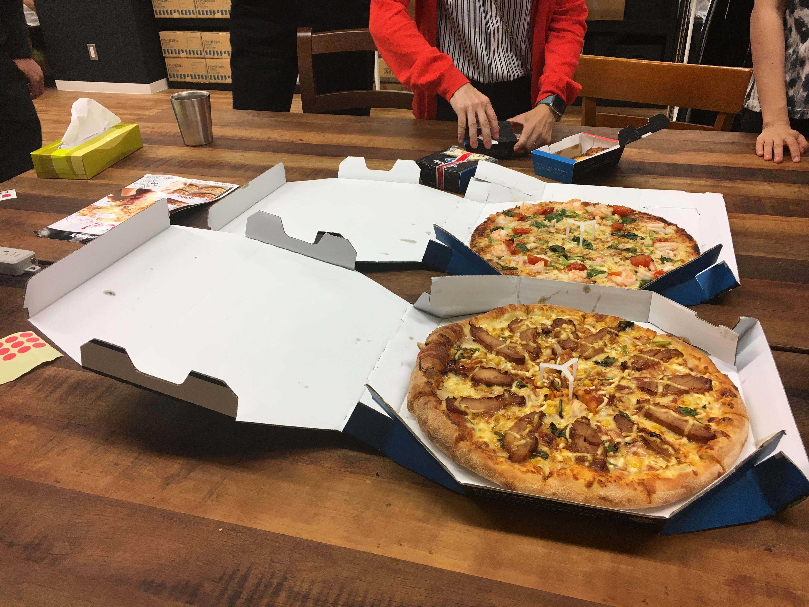

#fablicvim 2に参加した¶
TwitterのTLでは観測していたけど、本当に実在してるのかわからなかった人たちが参加するらしいと聞いていってきました。
発表メモ¶
@tommy 「はじめてのVim script」(初級者〜中級者向け)¶
前職はPHPStorm。SSH接続先で作業とかPerlとか他の言語を触るときはVim。
dotfiles人のコピーして使ってたが、メンテしないとWarningでたり。現職ではは全部Vimで書いてる。
ujihisaさんに後ろからVim裁きを受けてるらしい。
Vim scriptでHelloWorldしてみる。→プラグインを作ってみよう。Vimでテストってどうやるの？→どれがいいの？→ thinca/vim-themis
感想: 「FablicにいればいつでもVimの詳しい人に話聞けるよ！」←確かに！
@thinca 「なぜ Vim はいきなり文字を入力できないのか」(初級者〜中級者向け)¶
Vim初心者あるある→Vimが終了できない。文字が入力できない。
「Vimとは？テキストエディタとは？テキスト編集とは？」→哲学的な話が多かった。
Vimにとってテキストを編集するのは機能の一部。基本はノーマルモード。
「Vimはテキストエディタ、それ以外はテキストインプッター。」→確かに入力(インプット)モードから始まってる！
感想: ピザ食べてる時にujihisaさんが「インサートモードは息を止めて、水に潜っている状態」といってたのが印象的だった。
@yowcow 「Vimの本番運用について」(初級者〜中級者向け)¶
「Vimのバージョン7.4？8.0？違います。8.0.xxxx←ここなんですか？」自分は596だった。(macvim-kaoriyaの最新バージョン)
いつものようにVimをアップデートしたら、2017-07-10からVimがneocompleteで死ぬ事例に遭遇。
何が問題ったか？→最新を追ってたら動かないことがあるのは当然。問題は過去のバージョンにロールバックできないこと。
デプロイ方法を見直そう。
感想: いつも使うものだからこそ、バックアップやリカバリーの手段を用意する大事だよね。
飛び入り発表枠 + Vimさばきを見せ合う枠¶
@rbtnn tasidebarの話
Vimプラグインではなく、Vim本体の機能として作ってます。
https://github.com/rbtnn/vim の tabsidebar ブランチで使えるよ。
感想: 最初プラグインの話し方と思ったら、実は本体の機能とする話ですげー！ってなった。
-
treeコマンドをVimでやる。
ファイルの開閉とかはgfとかVim組み込みコマンドを使ってもらえれば。
vimfilerの機能で使えてない機能が多く、シンプルなものが欲しかったので作ってみた。
感想: 高機能とシンプルでそれぞれ求めるものがあるよな。
@lambdalisue マクロ漁船の話。。。ではなく、python vim 最強とググると便利！
Vimを最強のPython開発環境にする2 - Λlisue’s blog 書きました。2013年のだけどVimのエッセンスが詰まっています。
wifi.vim とか battery.vim とか作りました。(ただしmacのみ対応)
denite.nvim 便利。Python3インターフェースを有効にする必要があるよ。
gina.vim 超便利
感想: ginaは「じーな」と呼ぶ。覚えた。
@ujihisa エンドレス発表
ただただすごい。会場説明、ライブピザ発注、飛び入り発表 x n回
Fablicはいいぞ！
雑感¶
自分のVimレベルはせいぜい初級〜中級者レベルなので、vital.vim開発者会議っぽいのを横目で見ながらすげー！って感じで聞いてました。
仕事ではPyCharm+IdeaVimプラグインを使ってるので、Vimはもっぱらメモ書く・何か試すとかに使う・設定ファイルいじるぐらいなのですが、やっぱりVim便利なのでそれなりに使えるようでいたいですね。
そしてまわりに聞ける人がいる環境に入れるのはやはりいいなと思うのでした。
終わりに¶
Fablicvim #3、そしてVimConf2017…やるらしいよ。